PointlineJS
PointlineJS is an SVG based JS library for drawing tree diagrams. It relies on Treant-JS, Raphael for handling SVG and animations, JQuery.
Installation
You can get the latest release and the type definitions using npm:
npm install pointlinejs --save
Examples
-
Basic exampleOrganizational chart of the company structure along with pictures and basic information about each member.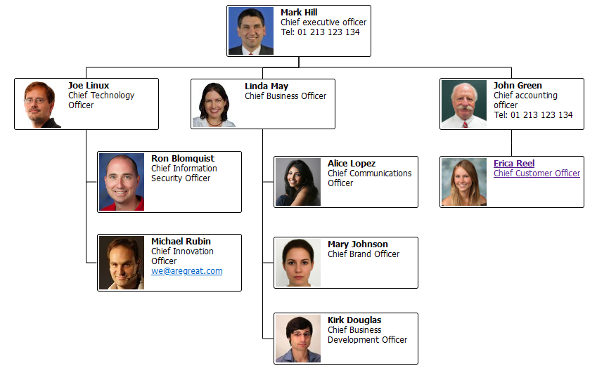CollapsableHere is an example that shows how to make an interactive, collapsible chart.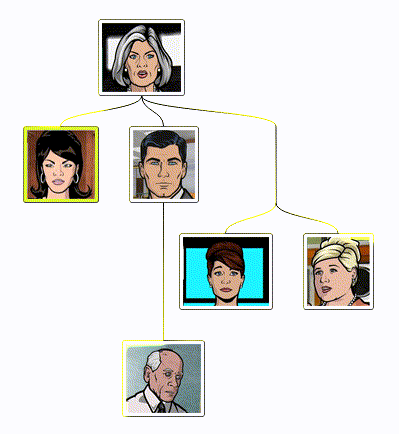CommentsTreant can be SEO friendly. This example shows how a static HTML can be used for node content.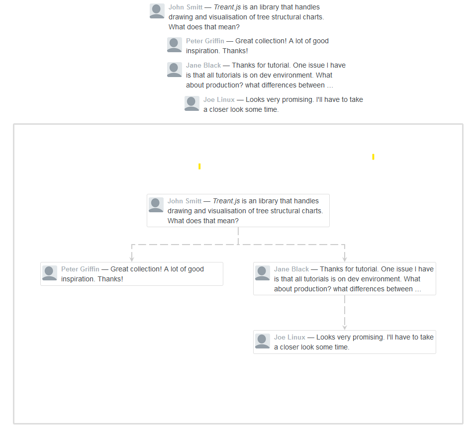ConnectorsUsing vendor/raphael.js as a SVG drawing library, all types and styles for connectors are possible.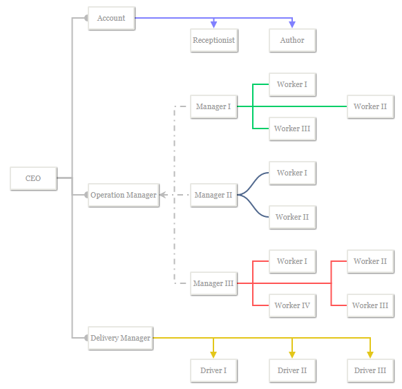Custom color plus scrollbarRoot node can be positioned in all four mayor directions. A scrollbar is only displayed where needed.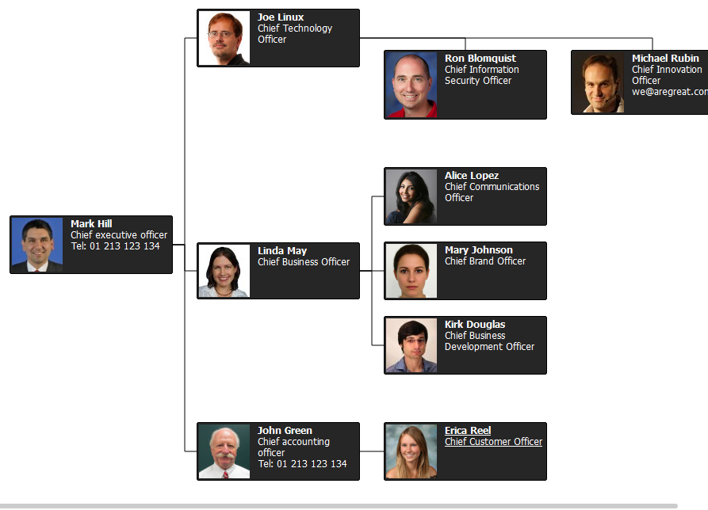Custom coloredThis is a demo displaying how the use of colors can represent each department in the company structure. It is simple and easy to understand. Anyone could easily visualize their departments in this type of chart.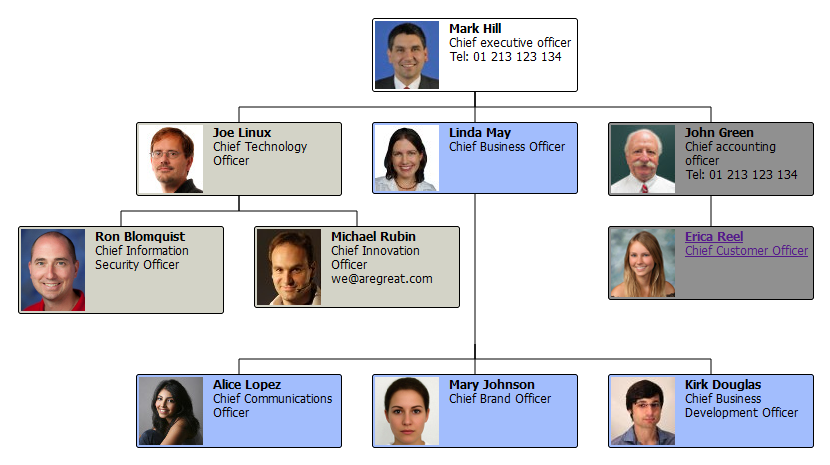Evolution treeThis is a very simple and effective representation of an evolution branch. It shows the use of scroller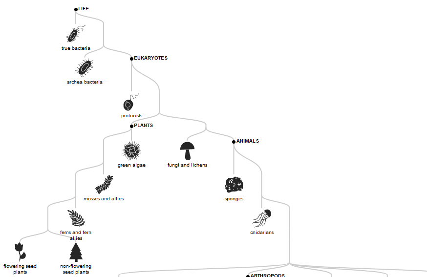No parentRoot nodes are optional and can easily be omitted.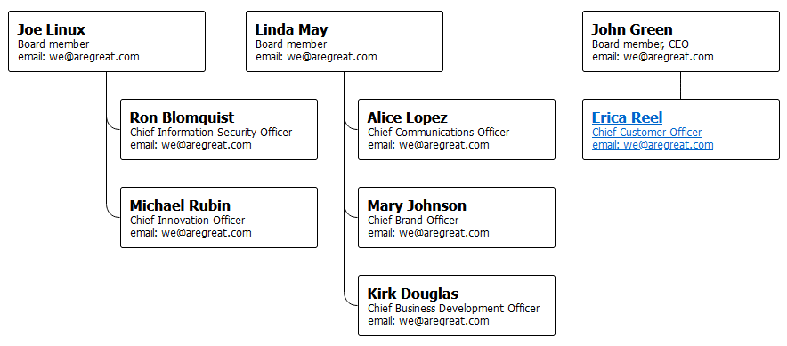Simple scrollbarWhen having trouble with a big and more complex chart, a good looking scrollbar can be used to access hidden content.
 Super simpleAn extra simple example. Just to get you started.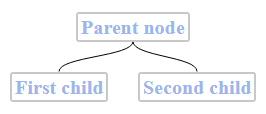Tennis drawTennis results are displayed in a classic tree structure. Tree structure is an adequate method of representation for any type of bracketed events.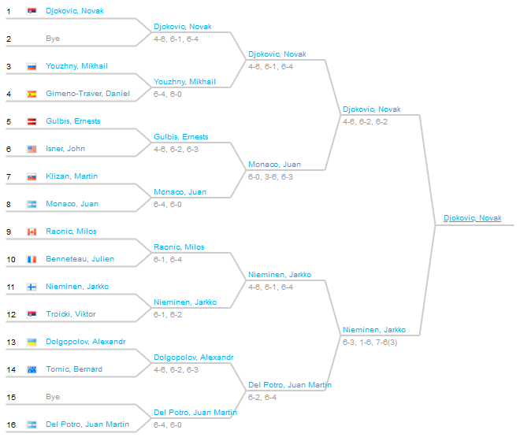Test groundTest multiple tree on one page
Super simpleAn extra simple example. Just to get you started.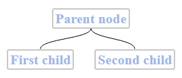Tennis drawTennis results are displayed in a classic tree structure. Tree structure is an adequate method of representation for any type of bracketed events.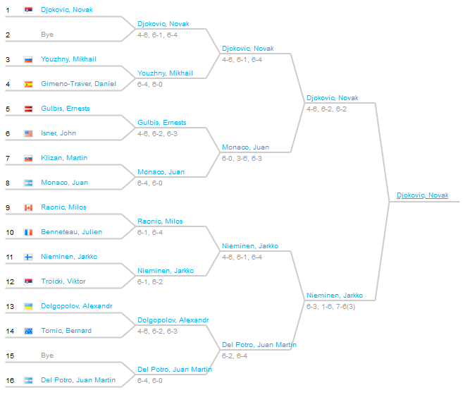Test groundTest multiple tree on one page TimelineAn interactive timeline can be made.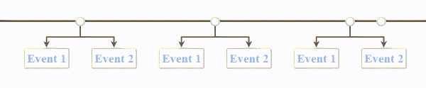
TimelineAn interactive timeline can be made.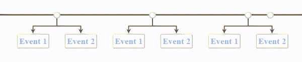